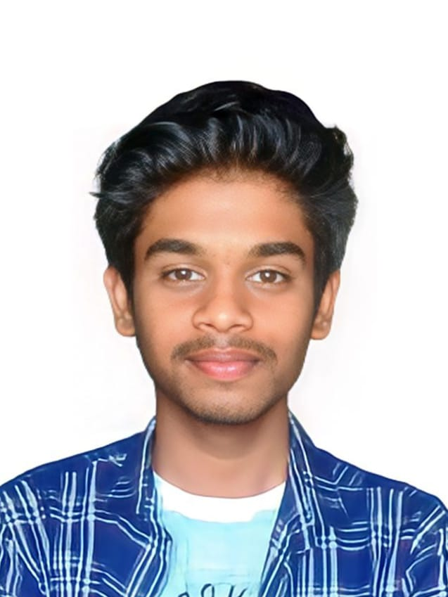

Arpit Sengar
Techinal Skills: HTML/CSS, Python, C++, Pandas, AI, ML
Certifications:
- Learn C++ Programming -Beginner to Advance- Deep Dive in C++, Udemy, Jun 23
- 100 Days of Code: The Complete Python Pro Bootcamp, Udemy, May 23
- Data Visualization, Kaggle, Apr 23
- Pandas, Kaggle, Apr 23
- Python (Basic) Certificate, Hackerrank, Mar 23
- SQL (Basic) Certificate, Hackerrank, Mar 23
| Education |
| Board |
Tenure |
Educational Institution |
CGPA/Percentagea |
| B.Tech CSE with AIML |
2022-2026 |
VIT, Bhopal |
8.25 |
| Class XII |
2021-2022 |
NWS, Gzb |
84% |
| Class X |
2019-2020 |
NWS, Gzb |
86% |
Summary
I was born in Saharanpur, Uttar Pradesh and grew up in Ghaziabad. Currently I am pursuing my bachelor's degree in
computer science from Vellore Institute of Technology, Bhopal. I love to sketch and beatbox. Currently, l am
sharpening my coding abilities through challenging curriculum and practical application. I am always working to
improve my abilities and keep up with the most recent trends. Python has been my favourite programming language
ever since.
I love interacting with new people and like to treat people with respect. I enjoy helping people and I love to
learn about new technologies.